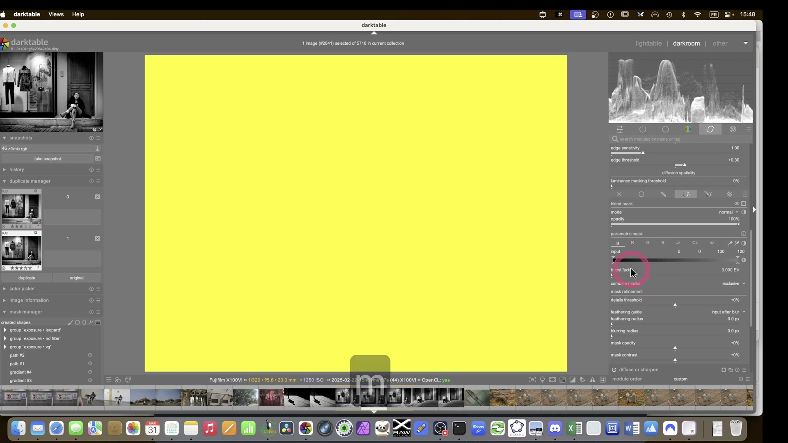
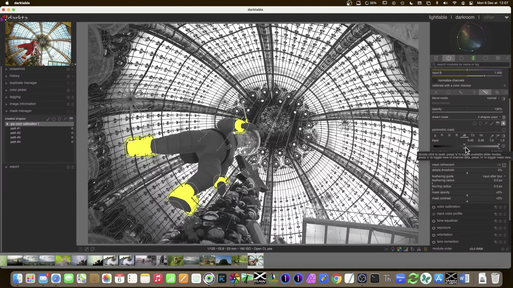
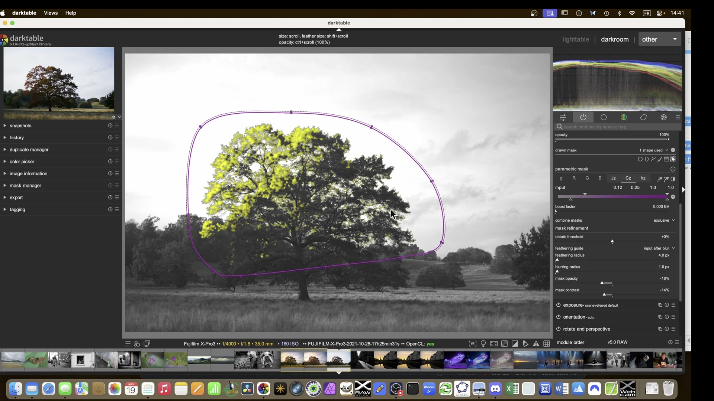
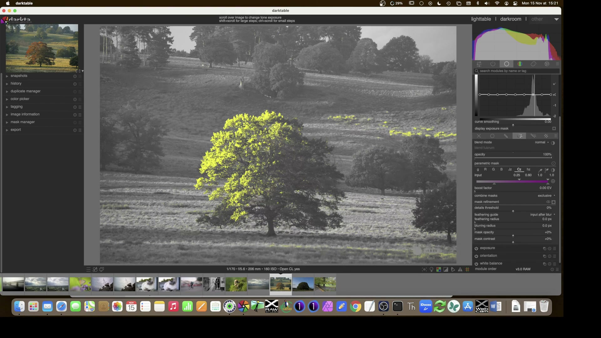
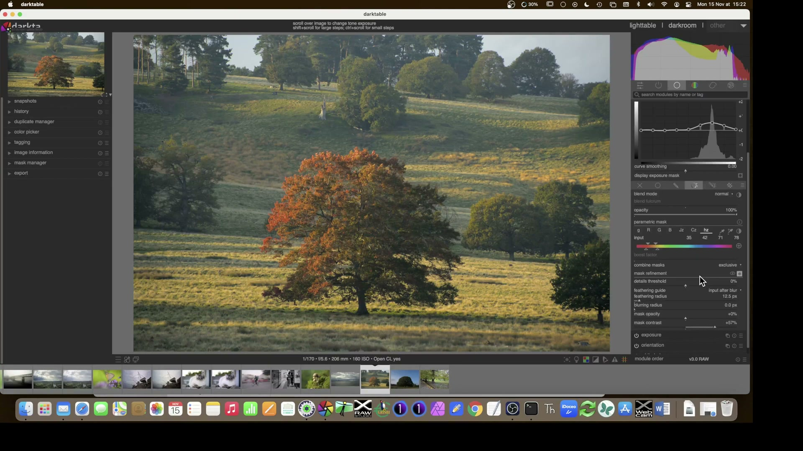
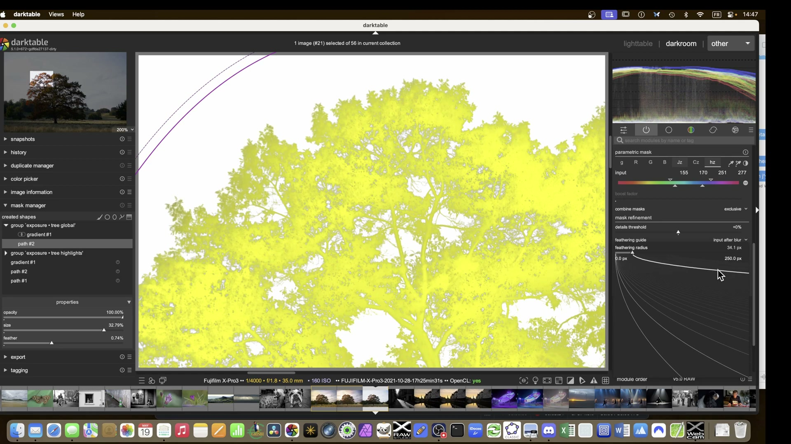

Maschere Parametriche¶
Le maschere parametriche selezionano i pixel automaticamente in base ai loro valori di luminosità, tonalità o saturazione. Non richiedono di disegnare nulla: la maschera si adatta automaticamente al contenuto.1
Canali disponibili¶
| Canale | Spazio colore | Descrizione | Range tipico | Note |
|---|---|---|---|---|
| L (Lightness) | display-referred RGB | Luminosità nel modello HSL (0–100%) | 0–100% | Basata su una trasformazione non lineare del segnale RGB; meno affidabile per immagini HDR 3 |
| a | Lab | Asse verde-magenta (CIE Lab) | -128–+128 | Valori negativi = verde, positivi = magenta. Sensibile a shift cromatici in alte luci 3 |
| b | Lab | Asse blu-giallo (CIE Lab) | -128–+128 | Valori negativi = blu, positivi = giallo. Instabile oltre 7 EV di DR 3 |
| C (Chroma) | LCh (Lab polar) | Saturazione percettiva (radiale da L) | 0–150 | Calcolata come √(a² + b²); utile per selezionare aree cromatiche indipendentemente dalla tonalità 1 |
| h (Hue) | LCh (Lab polar) | Tonalità (angolo in gradi) | 0–360° | 0°=rosso, 120°=verde, 240°=blu. Richiede alta precisione: ±5° già esclude il 15% dei pixel simili 1 |
| Jz | JzCzhz (scene-referred) | Luminanza percettiva HDR | 0–1.0 | Scala lineare rispetto alla percezione umana fino a 10.000 cd/m²; range tipico: 0.01–0.45 per scene esterne 14 |
| Cz | JzCzhz (scene-referred) | Crominanza (saturazione) | 0–0.5 | Più stabile di C in scenari ad alto contrasto; consigliato per correzioni locali su RAW 1 |
| hz | JzCzhz (scene-referred) | Tonalità nel sistema JzCzhz | 0–360° | Mantenuta coerente anche con forti modifiche di esposizione; preferibile a h per workflow scene-referred 1 |
| g (gray) | display-referred RGB | Grigio ponderato (R×0.299 + G×0.587 + B×0.114) | 0–1.0 | Equivalente al canale "luminance" di Photoshop; utile per maschere neutre su JPEG 1 |
Spazio colore ottimale per il tuo workflow
- Per RAW e workflow scene-referred: usa sempre
Jz,Cz,hz. Offrono linearità fisica, stabilità cromatica e supporto HDR fino a 14 EV 34. - Per JPEG o workflow display-referred:
L,C,hsono sufficienti ma limitati a ~6.5 EV di gamma dinamica 3. - Evita
a/bin presenza di bilanciamento del bianco non standard o moduli precedenti che alterano la cromaticità (es.color calibration) 3.
Flusso di lavoro avanzato¶
1. Selezione del cielo con Jz + hz (workflow scene-referred)¶
- Assicurati che il modulo Filmic RGB sia attivo prima della maschera (obbligatorio per Jz) 1.
- Apri il modulo Tone Equalizer, Color Balance RGB, o Local Contrast, quindi clicca su «Parametric mask».
- Seleziona lo spazio colore JzCzhz (disponibile solo se la pipeline è configurata come scene-referred) 1.
- Nel canale Jz, trascina i due triangoli superiori tra 0.08–0.22 per isolare le zone chiare del cielo (valore tipico per cielo nuvoloso a mezzogiorno) 1.
- Nel canale hz, posiziona i triangoli superiori tra 220°–270°, coprendo il blu-ciano del cielo senza includere il bianco delle nuvole 1.
- Usa il contagocce (pulsante sinistro sullo slider) per campionare un’area del cielo: darktable imposterà automaticamente i valori centrali 1.
- Premi M per visualizzare la maschera sovrapposta; premi C per vedere il canale Jz in scala di grigi e verificare l’uniformità del valore 1.
2. Isolamento di elementi cromatici (es. fiori viola)¶
- Attiva la maschera parametrica nel modulo Color Equalizer, Color Zones, o Color Calibration.
- Seleziona il canale hz, quindi usa il contagocce per cliccare sul fiore: darktable rileva il valore medio (es. 285°) 1.
- Imposta i triangoli superiori su 275°–295°, e quelli inferiori su 260°–310° per ottenere un feathering morbido 1.
- Attiva Cz e restringi i triangoli superiori a 0.15–0.35, escludendo foglie desaturate o ombre 1.
- Abilita boost factor a +0.50 EV: amplia il range di Jz per includere dettagli nelle luci riflesse del petalo 1.
3. Combinazione con maschere disegnate (es. scogliera contro cielo)¶
- Crea prima una maschera a gradiente per isolare la porzione superiore dell’immagine (cielo).
- Aggiungi una maschera parametrica su
Jz(0.10–0.30) per escludere nuvole troppo luminose. - Nella sezione «Combine masks», seleziona exclusive e assicurati che tutti i pulsanti di polarità siano + (positivi) 5.
- Usa feathering guide → input before blur per allineare la sfumatura della maschera al bordo netto scogliera/cielo 6.
- Regola feathering radius a 15 px e blurring radius a 3 px per eliminare artefatti 6.

Maschera combinata: gradiente (disegnata) + Jz (parametrica), modalità exclusive.
{kind=link}
Parametri tecnici dettagliati¶
Ogni canale dispone di quattro marker triangolari, organizzati in due coppie:
- Triangoli pieni (superiori): definiscono il range di valori con opacità 100% (massima applicazione del modulo).
- Triangoli vuoti (inferiori): definiscono il range di valori con opacità 0%, cioè esclusi completamente.
- La transizione tra 0% e 100% è lineare e proporzionale alla distanza tra i triangoli 1.
Polarità¶
- Pulsante +/- accanto a ogni canale: inverte la funzione di opacità.
- + (range select): seleziona solo i valori compresi tra i triangoli pieni.
- − (range deselect): esclude solo i valori compresi tra i triangoli pieni 1.
- Il pulsante invert in alto inverte tutte le polarità contemporaneamente, equivalente a un’inversione globale della maschera 1.
Boost factor¶
- Disponibile solo per canali con range >1.0 (es.
Jz,R,G,B). - Estende il range operativo dello slider: default = 0.00 EV, range = −2.00 a +4.00 EV 1.
- Utile per selezionare luci speculari (es. riflessi sull’acqua) che superano il valore 1.0 1.
Input vs Output sliders¶
- Alcuni moduli (es.
tone equalizer,color zones) mostrano due set di slider: - Input: agisce sui dati prima della modifica del modulo.
- Output: agisce sui dati dopo la modifica del modulo, ma prima della fusione.
- Abilitabili tramite «show output channels» nel menu blending 1.
- Fondamentali per maschere basate su risultati intermedi (es. selezionare solo i verdi dopo una correzione di bilanciamento del bianco) 1.
Consigli operativi¶
Dipendenza dalla pipeline
Le maschere parametriche dipendono strettamente dai moduli precedenti nella pipeline. Modificare white balance, exposure, filmic rgb, o input color profile cambia istantaneamente i valori di Jz, hz, Cz — e quindi la maschera. Verifica sempre ad alto zoom (100–200%) dopo ogni modifica a monte 2.
Contagocce intelligente
Il pulsante sinistro del contagocce (su qualsiasi slider) campiona l’intera area visibile (non solo un pixel).
- Clic singolo: imposta i triangoli pieni al valore medio dell’area selezionata.
- Ctrl+clic e trascina: imposta entrambi i triangoli pieni e vuoti in base al min/max dell’area rettangolare 1.
- Funziona solo con canali compatibili: Jz, hz, Cz, L, h, C 1.
Log mode per ombre
Premi A mentre sei sopra uno slider a o b: passa da scala lineare a logaritmica, offrendo maggiore precisione nelle ombre (valori <10) 1.
- Utile per separare ombre verdi da neri profondi in paesaggi forestali.
Maschere multi-canale: regola d’oro
Usare più canali insieme riduce drasticamente i falsi positivi.
- Esempio: selezionare il cielo richiede Jz (luminosità) + hz (tonalità) + Cz (saturazione).
- Con un solo canale (Jz), anche le nuvole bianche o le rocce illuminate saranno incluse.
- Con tre canali, la maschera diventa robusta: la probabilità che un pixel abbia contemporaneamente Jz=0.15, hz=250°, Cz=0.22 è <0.3% 1.
Esempi pratici con valori reali¶
Esempio 1: Recupero dettagli nuvole (da video A Dabble in Photography)¶
- Modulo: Tone Equalizer, modalità advanced.
- Maschera:
Jz(0.30–0.55),hz(190°–220°),Cz(0.05–0.15). - Boost factor: +1.20 EV per includere dettagli nelle luci più intense.
- Feathering radius: 12 px, blurring radius: 2 px.
- Combine masks: exclusive, tutti pulsanti + 7.
Esempio 2: Nitidezza selettiva su insetto (video A Dabble in Photography)¶
- Modulo: Contrast Equalizer, tab sharpening.
- Maschera:
Jz(0.05–0.18),hz(20°–45°),Cz(0.25–0.45) — per isolare il corpo arancione/bruno. - Details threshold: +15%, per ignorare aree sfocate dello sfondo.
- Mask contrast: +0.40, per accentuare la transizione intorno agli occhi 7.
Esempio 3: Correzione dominante verde su foglie (video A Dabble in Photography)¶
- Modulo: Color Calibration, tab CAT.
- Maschera:
hz(90°–130°),Cz(0.20–0.40),Jz(0.12–0.28). - Polarità:
hzimpostata a −,CzeJza +, per escludere solo il verde saturo delle foglie. - Blend fulcrum: 0.00 EV, per evitare shift cromatici sulle ombre 9.

Selezione foglie con contagocce su hz e Cz, combinata con Jz.
{kind=link}
Riferimenti visuali¶

{kind=link}

{kind=link}

{kind=link}

{kind=link}
Risorse¶
- Manuale ufficiale: Parametric Masks — descrizione completa di ogni canale, logica dei triangoli, opzioni di polarity e gestione input/output 1.
- PIXLS.US: Luminosity Masking in Darktable — tutorial con confronti pratici tra
L,Jz,RGBe analisi di errore su immagini reali 3. - A Dabble in Photography: Darktable Masks Episode 4 & 5 — walkthrough video con screenshot dettagliati di workflow per scogliere, insetti e fiori 78.
- Darktable User Manual 4.8: Combining drawn & parametric masks — guida tecnica sulle modalità exclusive, inclusive, e inverted 5.
- Darktable User Manual 4.8: Mask refinement & additional controls — approfondimento su
details threshold,feathering guide,mask opacityemask contrast6.
Fonti¶
-
darktable User Manual -- Parametric Masks, docs.darktable.org |
processed/darktable-usermanual-en/usermanual-48-en-darkroom-masking-and-blending-masks-parametric.md↩↩↩↩↩↩↩↩↩↩↩↩↩↩↩↩↩↩↩↩↩↩↩↩↩↩↩↩↩ -
Landscape edit with AI — A Dabble in Photography ↩
-
PIXLS.US — Luminosity Masking in Darktable, pixls.us |
processed/pixls-articles/articles-luminosity-masking-in-darktable.md↩↩↩↩↩↩↩ -
CIE Technical Report 224: JzAzBz — A Uniform Color Space for HDR and Wide Gamut Applications, CIE, 2017. DOI: 10.25039/TR.224.2017 ↩↩
-
darktable 4.8 user manual — combining drawn & parametric masks, docs.darktable.org ↩↩
-
darktable 4.8 user manual — mask refinement & additional controls, docs.darktable.org ↩↩↩
-
[ENG] darktable masks Episode 4, A Dabble in Photography, youtube.com/watch?v=4z70D5zRAXw ↩↩↩
-
[ENG] darktable masking episode 5, A Dabble in Photography, youtube.com/watch?v=eTSRnz-ZMzU ↩
-
[ENG] Some Color calibration ideas, A Dabble in Photography, youtube.com/watch?v=MJJR8DJ3rr8 ↩